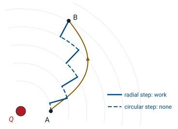
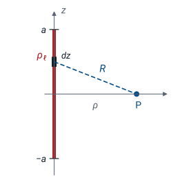

L22 - Electric Potential#
Electric Potential
Today we trade the electric field, a vector, for the potential, a scalar, and learn to get the field back.
Lesson 22 · Module 2: Electrostatics · Maj Ellis · Dr. Neil Rogers
Learning Objectives
- I can calculate the electric field from the scalar electric potential in a variety of geometries.
Lessons 18 through 21 found the electric field directly, by adding up Coulomb’s law or by drawing a Gaussian surface. Both methods work with a vector, three components at every point, and Coulomb’s law needs a separate integral for each component. Today we define the electric potential, the work per unit charge to move a charge against the field. It is a scalar, one number at every point, so it adds without components. We derive it from the work integral, prove that the static electric field does no net work around a closed path, find the potential of a point charge and of a line of charge, and derive the rule that recovers the field from the potential: \(\mathbf{E} = -\nabla V\).
Where We Were
Lessons 18 to 20: the field of a point charge and of an infinite line.
A charge \(q\) in the field feels \(\mathbf{F} = q\mathbf{E}\).
The first result is Coulomb’s law for a point charge \(Q\) at the origin, in a material of permittivity \(\epsilon\); the field points radially outward and falls as \(1/r^2\). The second is the field of an infinitely long line with charge \(\rho_\ell\) per unit length on the \(z\) axis, which Lesson 20 found from a cylindrical Gaussian surface; it points away from the line and falls as \(1/\rho\). The definition of the field is the force it puts on a test charge: a charge \(q\) placed in the field feels \(\mathbf{F} = q\mathbf{E}\). Today we ask how much work it takes to move that charge.
Work Against the Field
To move \(q\) slowly, we push with \(-q\mathbf{E}\). Over a step \(d\mathbf{l}\):
Suppose we carry the test charge \(q\) from point \(A\) to point \(B\). The field pushes on it with \(q\mathbf{E}\). To move it without letting it accelerate, we must push back with an equal and opposite force, \(-q\mathbf{E}\). The work we do over a short step \(d\mathbf{l}\) is our force dotted with the step, \(dW = -q\mathbf{E}\cdot d\mathbf{l}\). Only the part of the step along the field costs work: a step perpendicular to \(\mathbf{E}\) costs none. Adding the steps along the whole path gives the line integral. When we move a positive charge against the field, \(\mathbf{E}\cdot d\mathbf{l}\) is negative and the work is positive: we put energy in.
Potential Difference
Divide the work by the charge:
Units: joules per coulomb, or volts.
Field units follow: V/m.
The work depends on how much charge we carry, so we divide it out. The work per unit charge is the potential difference between the two points, \(V_B - V_A\), the potential at \(B\) minus the potential at \(A\). Its unit is the joule per coulomb, which is the volt, the same volt a voltmeter reads. That is also why the electric field is measured in volts per meter: the field is how fast the potential changes with distance. A positive \(V_B - V_A\) means it takes work to bring a positive charge from \(A\) to \(B\), so \(B\) sits “uphill” in potential.
Moving Near a Point Charge

Now take the field of a point charge and ask whether the path matters. In spherical coordinates a general step \(d\mathbf{l}\) has three parts, from the differential elements of Lesson 17: a radial step \(dr\), and two steps along circles around the charge. The field points along \(\hat{\mathbf{r}}\), so it is perpendicular to both circular steps, and only the radial part of a step costs work. The staircase path in the figure makes this plain: each solid radial segment costs work, and each dashed arc costs none. The smooth path is a staircase with infinitely small steps.
Path Independence
Only \(r_A\) and \(r_B\) appear: the path does not matter.
Dotting the field with the step keeps only the radial term, so the integral runs over \(r\) alone, from \(r_A\) to \(r_B\). The antiderivative of \(1/r^2\) is \(-1/r\), and the two minus signs cancel, which gives the result. The answer depends only on how far each endpoint is from the charge. Every path from \(A\) to \(B\), straight, curved, or wandering, costs the same work. Any static charge distribution is a sum of point charges, and the work integrals add, so the same is true for every electrostatic field.
The Static Field Is Conservative
Go from \(A\) to \(B\) and back by another path:
Around a circuit: Kirchhoff’s voltage law.
If every path from \(A\) to \(B\) costs the same work, then going out by one path and back by another costs nothing: the work out is canceled by the work back. Any closed loop \(C\) is such a round trip, so the integral of the static field around every closed loop is zero. A field with this property is called conservative. Stokes’ theorem from Lesson 17 turns the loop integral into the flux of \(\nabla\times\mathbf{E}\) through any surface the loop bounds; that flux is zero for every surface, so the curl itself is zero. Around a circuit, the loop integral is the sum of the voltage drops, and setting it to zero is Kirchhoff’s voltage law, which Lesson 3 used on the lumped-element model. Module 4 shows that a changing magnetic field breaks this rule.
Potential of a Point Charge
Choose the reference \(V = 0\) at \(r_A \to \infty\):
Superposition is a scalar sum:
Only differences in potential have physical meaning, so we are free to pick where \(V = 0\). For charges confined to a finite region, the natural choice is infinitely far away. Setting \(r_A \to \infty\) in the path-independence result sends \(1/r_A\) to zero and leaves the potential of a point charge: the work per unit charge to bring a test charge in from infinity to a distance \(r\). For several charges \(Q_n\) at positions \(\mathbf{r}_n\), the work to bring the test charge in is the sum of the works against each charge separately, so the potentials add. They add as plain numbers, with no components and no unit vectors, which is what makes the potential easier to compute than the field.
Potential of a Charge Distribution
Each element \(dQ\) is a point charge:
One integral, not three.
A continuous distribution of charge is a sum of infinitely many small charges. Each element \(dQ\) contributes the potential of a point charge, \(dQ/(4\pi\epsilon R)\), where \(R\) is the distance from the element to the field point. The sum becomes an integral over the line, surface, or volume that holds the charge, with \(dQ\) written in terms of the line, surface, or volume charge density. Lesson 19 found the field of the same distributions, which took a separate integral for each component of \(\mathbf{E}\) and careful bookkeeping of unit vectors. The potential takes one scalar integral.
Example: A Finite Line of Charge

Take a line of charge density \(\rho_\ell\) on the \(z\) axis from \(z = -a\) to \(z = a\), and find the potential at a point \(P\) in the plane \(z = 0\), a distance \(\rho\) from the line. A short piece \(dz\) of the line holds charge \(dQ = \rho_\ell\ dz\). Its distance to \(P\) is the hypotenuse of a right triangle with legs \(z\) and \(\rho\), so \(R = \sqrt{z^2 + \rho^2}\). Adding the contributions from every piece of the line gives one integral over \(z\).
Evaluating the Integral
The integral is a standard form, on the inside cover of most calculus texts; differentiating the right side confirms it. Evaluating at the two limits and subtracting gives a ratio inside the logarithm. To simplify, multiply the top and bottom of the ratio by \(a + \sqrt{a^2 + \rho^2}\). The bottom becomes \((a^2 + \rho^2) - a^2 = \rho^2\), and the top becomes the square of \(a + \sqrt{a^2 + \rho^2}\). The logarithm of a square is twice the logarithm, which turns \(4\pi\) into \(2\pi\) and leaves \(\rho\) alone in the denominator.
The Field Is the Gradient of the Potential
For a short step \(d\mathbf{l}\), two ways to write \(dV\):
Now we reverse the process and recover the field from the potential. Over a short step \(d\mathbf{l}\), the definition of potential difference says the change in potential is \(-\mathbf{E}\cdot d\mathbf{l}\). Lesson 17 defined the gradient by the same kind of statement: the change in any scalar over a short step is its gradient dotted with the step. Both are true for every step, in every direction, so the two vectors must be equal: the electric field is the negative gradient of the potential. The minus sign says the field points downhill, from high potential toward low. In rectangular coordinates, \(\mathbf{E} = -\left(\hat{\mathbf{x}}\ \partial V/\partial x + \hat{\mathbf{y}}\ \partial V/\partial y + \hat{\mathbf{z}}\ \partial V/\partial z\right)\), and Lesson 17 gives the cylindrical and spherical forms.
Field of the Finite Line
With \(s = \sqrt{a^2 + \rho^2}\), so \(ds/d\rho = \rho/s\):
In the plane \(z = 0\), symmetry makes the field point straight away from the line, so only the \(\rho\) derivative of the potential survives. Write the logarithm of the ratio as a difference of logarithms and differentiate each. The first needs the chain rule through \(s\). Putting the two terms over the common denominator \(\rho\ s\ (a + s)\) gives a numerator of \(\rho^2 - s(a + s) = \rho^2 - as - a^2 - \rho^2 = -a(a + s)\), and the factor \(a + s\) cancels. The negative gradient then gives the field. For a line much longer than the distance to it, \(a \gg \rho\), the last factor goes to one and the result is \(\rho_\ell/(2\pi\epsilon\rho)\), the Gauss’s-law field of the infinite line from Lesson 20.
The Infinite Line Needs a New Reference
As \(a \to \infty\), \(V \to \frac{\rho_\ell}{2\pi\epsilon}\ln\frac{2a}{\rho} \to \infty\). Reference \(V = 0\) at \(\rho_0\) instead:
For a long line, \(\sqrt{a^2 + \rho^2} \approx a\), and the potential grows without bound as the line gets longer: an infinite line holds infinite charge, and bringing a test charge in from infinity would cost infinite work. The field stays finite, because the gradient of \(\ln(2a)\) is zero. The fix is to put the reference somewhere finite. We pick a radius \(\rho_0\) where \(V = 0\) and integrate the Gauss’s-law field from there. Changing \(\rho_0\) adds a constant to \(V\) everywhere and leaves the field unchanged, because only differences in potential matter. Lesson 23 meets this logarithm again in the coaxial line, where the outer conductor supplies the reference.
Equipotential Surfaces
On a surface of constant \(V\), every step has \(dV = 0\):
\(\mathbf{E}\) points from high \(V\) to low \(V\).
Crowded surfaces mean a strong field.
An equipotential is a surface on which the potential is the same everywhere: the spheres around a point charge, or the cylinders around a line. Along any step that stays on the surface, the potential does not change, so \(\mathbf{E}\cdot d\mathbf{l}\) is zero for every such step. The field must therefore be perpendicular to the surface at every point. Equipotentials work like the contour lines on a topographic map, with the field as the direction of steepest descent. Where the contours crowd together, the potential changes quickly with distance, and the field is strong. Moving a charge along an equipotential costs no work.
Equipotentials of Two Charges
The widget sums the potential of two point charges, \(Q_1\) and \(Q_2\), and draws contours at \(\pm 25\), \(50\), \(100\), \(200\), \(400\), and \(800\) V, red for positive and blue for negative, with the zero contour in gray. The arrows show only the direction of \(\mathbf{E}\), computed as the vector sum of the two Coulomb fields. Check that every arrow crosses every contour at a right angle and points from red toward blue. Drag the amber probe, or either charge. With the dipole preset the probe starts on the gray line between the charges, where \(V = 0\) but \(\vert\mathbf{E}\vert = 1.77\) kV/m: zero potential does not mean zero field. Switch to Like charges and find the point between them where the field vanishes but the potential does not.
Worked Example: Field from a Potential
In a charge-free region, \(V = 10\left(x^2 - y^2\right)\) V, with \(x\) and \(y\) in meters.
Worked example — the field from a known potential
The potential \(V = 10(x^2 - y^2)\) V does not depend on \(z\), so \(\partial V/\partial z = 0\), and the field has only \(x\) and \(y\) components. The partial derivatives are
so \(\mathbf{E} = -\hat{\mathbf{x}}\ 20x + \hat{\mathbf{y}}\ 20y\) V/m. At the point \((1, 2, 0)\) m, the potential is \(10(1 - 4) = -30\) V and the field is \(-\hat{\mathbf{x}}\ 20 + \hat{\mathbf{y}}\ 40\) V/m, with magnitude \(\sqrt{20^2 + 40^2} = 44.7\) V/m. Carrying a \(1\) nC charge from the origin, where \(V = 0\), to this point takes work \(W = q(V_B - V_A) = 10^{-9}\times(-30) = -30\) nJ: the field does the work, and we hold the charge back. The equipotentials of this \(V\) are hyperbolas, \(x^2 - y^2 = \) constant, and Lesson 23 shows why this particular potential is allowed in a region with no charge.
Summary
Symbol / idea |
What it is |
Result |
|---|---|---|
Potential difference |
Work per unit charge from \(A\) to \(B\) |
\(V_B - V_A = -\int_A^B \mathbf{E}\cdot d\mathbf{l}\) |
Conservative field |
No net work around any closed path |
\(\oint \mathbf{E}\cdot d\mathbf{l} = 0\), \(\nabla\times\mathbf{E} = 0\) |
Point charge |
Reference at infinity |
\(V = Q/(4\pi\epsilon r)\) |
Distribution |
Scalar sum of point charges |
\(V = \int dQ/(4\pi\epsilon R)\) |
Finite line, \(z = 0\) |
Length \(2a\) |
\(V = \frac{\rho_\ell}{2\pi\epsilon}\ln\frac{a + \sqrt{a^2 + \rho^2}}{\rho}\) |
Infinite line |
Reference at \(\rho_0\) |
\(V = \frac{\rho_\ell}{2\pi\epsilon}\ln\frac{\rho_0}{\rho}\) |
Field from potential |
Points downhill |
\(\mathbf{E} = -\nabla V\) |
Equipotential |
Surface of constant \(V\) |
\(\mathbf{E}\) is perpendicular to it |
Practice
Where This Is Going
Lesson 23: combine \(\mathbf{E} = -\nabla V\) with Gauss’s law to get one equation for \(V\), and solve it between conductors.
Lesson 25: the potential between conductors gives capacitance.
Today we found the potential by integrating over known charges. In most devices the charges are not known in advance: we know the voltages on the conductors, and the charge arranges itself to match. Lesson 23 combines today’s \(\mathbf{E} = -\nabla V\) with the point form of Gauss’s law from Lesson 21 to get Poisson’s and Laplace’s equations, and solves them for the parallel-plate capacitor and the coaxial line. Lesson 25 turns those solutions into capacitance, including the coaxial \(C'\) that Lesson 6 quoted.
Before Lesson 23, read section 5.16 of Ellingson, Electromagnetics, Vol. 1.